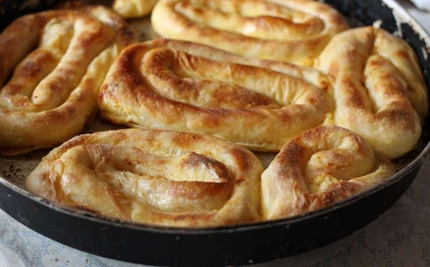

Burek

Description
This recipe is Eastern European in origin; being from Bosnia, my mom made this for me
growing up and my whole family always looked forward to it! Serve with Balkan style yogurt
for authenticity.
Ingredients
- 1 pound lean ground beef
- 1 tablespoon ground allspice
- 1 tablespoon paprika
- salt and freshly ground pepper to taste
- 1 potato, finely chopped
- 1 onion, chopped
- 1 (16 ounce) package phyllo dough
- ¼ cup melted butter
Steps
- Preheat an oven to 400 degrees F (200 degrees C).
- Brown ground beef in a large non-stick skillet over medium heat, 5 to 7 minutes.
Drain fat; stir in allspice, paprika, salt, and pepper. Transfer beef to a large bowl and
stir in potato and onion.
- Unroll phyllo pastry and transfer 2 sheets to a work surface; stack sheets. Spoon 1/8th of
the ground beef mixture down one long edge of the phyllo pastry. Roll phyllo into a tube,
encasing beef. Shape the tube into a coil (snail shape). Place the roll on an ungreased
baking sheet; brush with melted butter. Repeat, placing finished rolls up against one another
to keep them from unrolling.
- Bake burek in the preheated oven until golden brown, 20 to 30 minutes.